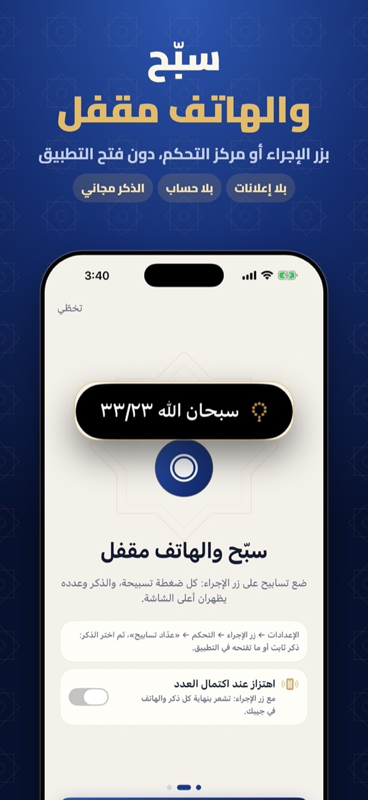
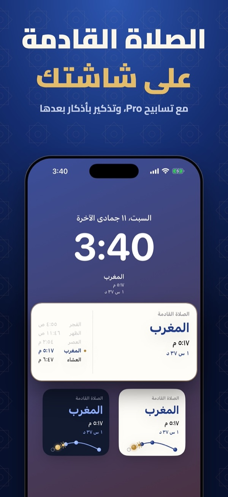
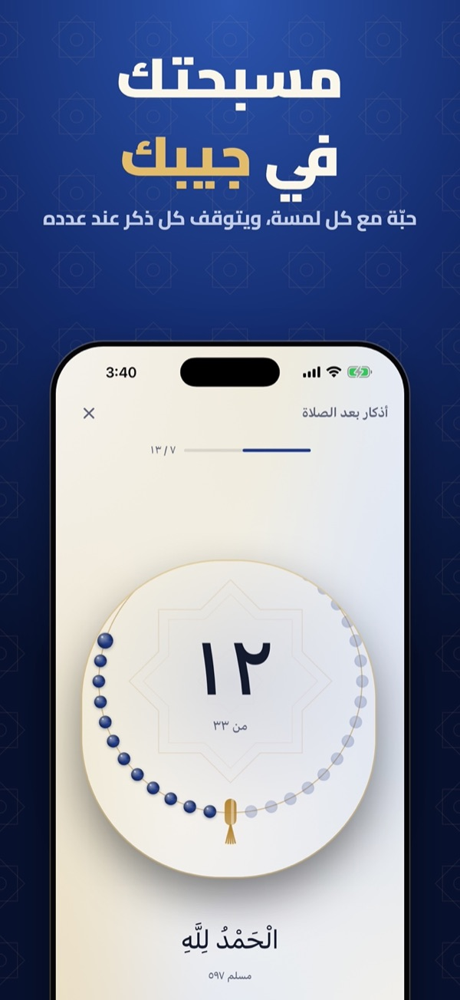
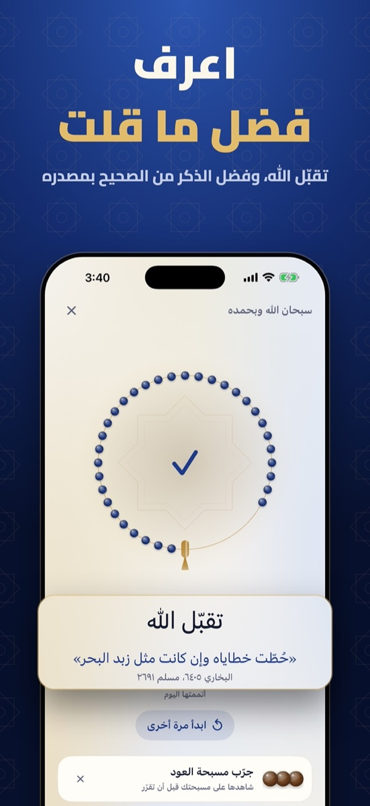
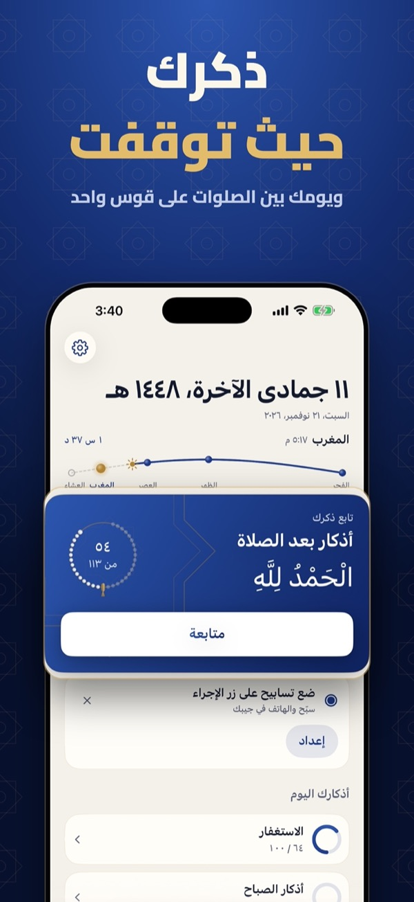
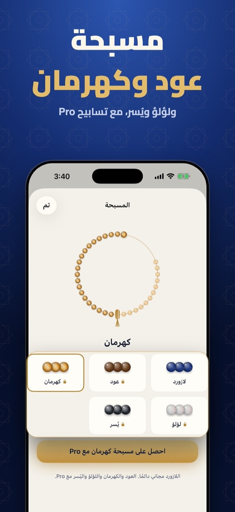

مسبحتك في جيبك، وأذكارك بعد كل صلاة
سبّح بزر الإجراء والهاتف مقفل: كل ضغطة تسبيحة، ويهتز الهاتف عند اكتمال كل ذكر. الأذكار من «حصن المسلم» ومع كل ذكر مصدره.
قريبًا على App Store- الذكر مجاني دائمًا
- بلا حساب
- بلا إعلانات
- بياناتك على جهازك






سبّح دون أن تنظر
- زر الإجراء أو مركز التحكم: كل ضغطة تسبيحة والهاتف مقفل
- الذكر وعدده أعلى الشاشة
- اهتزاز عند اكتمال كل ذكر لتعرف أنه حان الانتقال
أذكار بمصادرها
- أذكار بعد الصلاة كاملة، والصباح والمساء، وتسبيح النوم
- من «حصن المسلم» ومع كل ذكر مصدره
- يتوقف كل ذكر عند عدده، وفي آخر الجولة فضله كما ورد في السنّة
في وقتها
- أوقات الصلاة على شاشة اليوم، تُحسب على جهازك
- أذكار الصباح بعد الفجر والمساء بعد العصر
- تذكير هادئ إن شئت، لا يذكّرك بما أتممته
أسبوعك حبّات
- حبّة لكل ذكر أتممته، بلا أرقام تُثقلك ولا لوم
- أدوات للشاشة الرئيسية تسبّح منها بلمسة، وأخرى لشاشة القفل
- أذكارك الخاصة بعددها الذي تختاره
أسئلة
هل تسابيح مجاني؟
نعم، الذكر نفسه مجاني دائمًا: المسبحة وزر الإجراء وكل الأذكار المدمجة. تسابيح Pro يضيف التذكير بأذكار بعد الصلاة بعد كل أذان، وودجت الصلاة القادمة، ومسبحات بخامات نفيسة، وأذكارك الخاصة بلا حدود وسجلّك الكامل. وتجرّب التذكير والودجت مجانًا أول سبعة أيام.
هل Pro اشتراك؟
لا. Pro دفعة واحدة، لك للأبد، بلا اشتراك، عبر Apple.
من أين الأذكار؟
من «حصن المسلم»، ومع كل ذكر مصدره من كتب السنّة. وإن وجدت خطأً فراسلنا من صفحة الدعم.
هل أحتاج حسابًا؟
لا. افتح التطبيق وسبّح.
أين تُحفظ بياناتي؟
على جهازك فقط. لا خوادم ولا تحليلات ولا تتبّع، وتُحسب أوقات الصلاة على الهاتف. اقرأ سياسة الخصوصية.
ما الأجهزة المدعومة؟
iPhone بنظام iOS 18 أو أحدث. زر الإجراء في iPhone 15 Pro وما بعده، ومركز التحكم والأدوات في كل الأجهزة.
تحتاج مساعدة؟
زر صفحة الدعم أو راسلنا على meshal.dev@outlook.com.